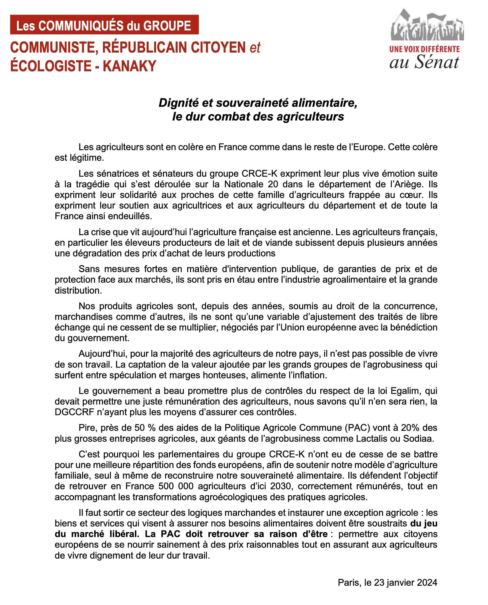

Déclaration parlementaire relayée
Colère agricole. Les sénateurs communistes défendent des prix rémunérateurs
Date indiquée par Facebook · 24 janvier 2024
Repères éditoriaux
Les sénateurs du groupe CRCE-K expriment leur solidarité avec les agriculteurs mobilisés. Nous avons relayé leur communiqué sur le revenu agricole et le juste prix payé aux producteurs.
Texte conservé avec la publication
La colère des agriculteurs est légitime. Les @senateursCRCE sont solidaires de leurs combats. Ils proposent depuis longtemps de sortir des logiques libérales pour instaurer une exception agricole. Mais il faut avoir le courage de s'attaquer à l'agrobusiness.
#agriculteursencolere

Sources
Archive rouge · export Facebook · AR-0002-FB-01490
À lire aussi · À Cerizay, le rassemblement de la Confédération paysanne en vidéo · Le lien vidéo